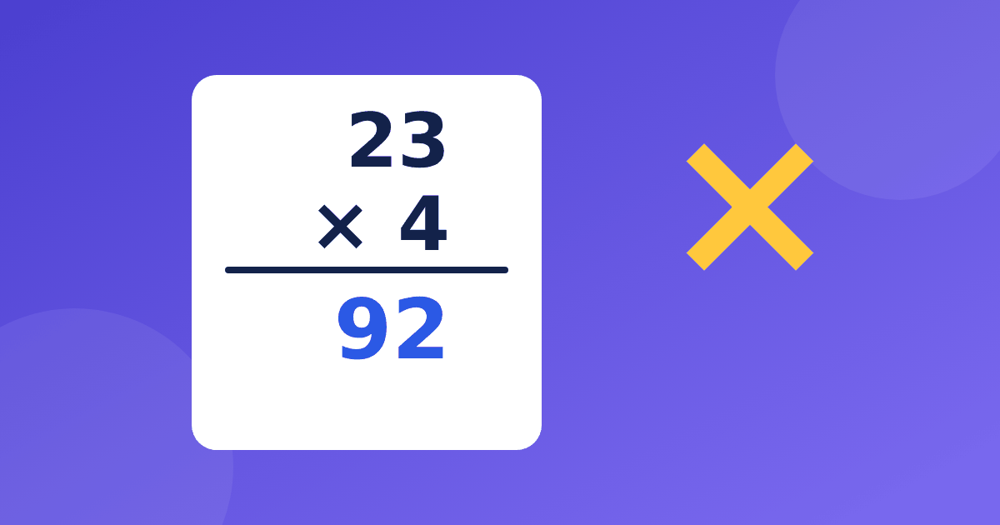

Что нужно знать ребёнку, прежде чем учить столбик

Обычно ближе к середине учебного года в тетради появляется запись столбиком, и ребёнок воспринимает умножение в столбик 3 класс как совсем новое занятие. Родители удивляются: таблицу вроде бы знает, а примеры не получаются. Чаще всего причина не в самом алгоритме, а в нескольких мелких навыках, которые стоит проверить заранее. Разберём их по порядку.
Табличные случаи должны быть под рукой
Столбик не заменяет таблицу, а опирается на неё. Чтобы умножить 47 на 6, ребёнок по очереди берёт 7 × 6 = 42 и 4 × 6 = 24. Если на каждый такой шаг уходит минута или приходится считать по одному, пример растягивается, а интерес пропадает. Идеальная скорость не нужна, важны уверенные ответы без пересчёта. Если вы пока не знаете, как обстоят дела, посмотрите, как проверить таблицу умножения в 3 классе, и отметьте шаткие места. Обычно это шестёрка, семёрка и восьмёрка, поэтому таблицу на 7 и 8 стоит повторить отдельно.
Разряды: десятки и единицы
Запись столбиком держится на разрядах. Ребёнок должен без запинки видеть, что в числе 47 четыре десятка и семь единиц, а в числе 63 шесть десятков и три единицы. Полезны короткие вопросы вслух.
- Сколько десятков в числе 80? Восемь.
- Из чего состоит число 95? Из девяти десятков и пяти единиц.
- Сколько будет 30 × 2? Три десятка по два, то есть 60.
Круглые числа дают хорошую зарядку, например 40 × 3 = 120 или 50 × 4 = 200. Здесь помогает знание умножения на 5 и на 10, ведь четыре десятка по три это 12 десятков.
Умножение двузначного числа на однозначное по частям
Прежде чем записывать столбиком, пусть ребёнок решает такие примеры в уме, разбивая число на десятки и единицы. Это и есть смысл столбика, только без записи. Вот три образца.
- 23 × 4 равно 20 × 4 плюс 3 × 4, то есть 80 + 12 = 92
- 36 × 2 равно 30 × 2 плюс 6 × 2, то есть 60 + 12 = 72
- 18 × 5 равно 10 × 5 плюс 8 × 5, то есть 50 + 40 = 90
Сначала берите числа, где единицы дают небольшой результат, потом переходите к случаям с переходом через десяток. Когда по частям получается уверенно, столбик воспринимается как удобная короткая запись, а не как правило, которое нужно запомнить.
Перенос: где чаще всего ошибаются
Главная сложность в том, что произведение единиц бывает двузначным. Возьмём 28 × 3. Сначала 8 × 3 = 24. Четвёрку записываем под чертой, а два десятка запоминаем. Затем 2 × 3 = 6, прибавляем запомненные два десятка и получаем 8. Ответ 84. Типичная ошибка: ребёнок забывает прибавить запомненное, и выходит 64. Пусть на первых порах он выписывает запомненную цифру маленьким числом над десятками, потом привычка закрепится. Полезно и умение прикинуть результат: 28 почти 30, а 30 × 3 = 90, значит, ответ около девяноста, и 64 явно не подходит. Про типичные промахи взрослых при занятиях есть отдельная статья про ошибки родителей.
Аккуратная запись помогает не ошибаться
Многие ошибки в столбике связаны не со счётом, а с записью. Цифры съезжают, десятки оказываются в колонке единиц, и ответ получается неверным, хотя каждый шаг был правильным. Пусть ребёнок пишет по одной цифре в клетке и выравнивает числа по правому краю. Разберём ещё один пример, 46 × 2. Сначала 6 × 2 = 12, пишем 2, один десяток запоминаем. Потом 4 × 2 = 8, прибавляем запомненный десяток и получаем 9. Ответ 92. Попросите ребёнка проверить себя прикидкой: 46 это почти 50, а 50 × 2 = 100, значит, ответ чуть меньше ста, и 92 подходит. Привычка оценивать результат вырабатывается постепенно, но она спасает от самых грубых промахов.
Как заниматься и что проверить перед началом
Занятия лучше делать короткими, по 10–15 минут несколько раз в неделю. Подготовка к умножению в столбик растягивается на несколько недель спокойной работы, и это нормально, ведь у всех детей разный темп. Табличные ответы удобно повторять в тренажёре «Таблица без зубрёжки». В нём есть бесплатная часть, нет таймеров на вопросах и рекламы, а если ответ не вспоминается, кнопка «Показать визуально» подскажет его картинкой. Перед первым столбиком убедитесь, что ребёнок:
- уверенно называет табличные произведения
- понимает, из каких разрядов состоит число
- умеет умножать двузначное число на однозначное устно по частям
- складывает двузначные числа с переходом через десяток
Если что-то из списка пока не получается, вернитесь на шаг назад. Столбик никуда не убежит, а уверенная база сделает его заметно проще.
Порядок тем в школе может отличаться от учебника к учебнику, поэтому ориентируйтесь на то, что сейчас проходит ваш класс. За один вечер не пытайтесь пройти всё сразу: одного или двух примеров с переносом вполне достаточно, остальное время лучше посвятить повторению таблицы.